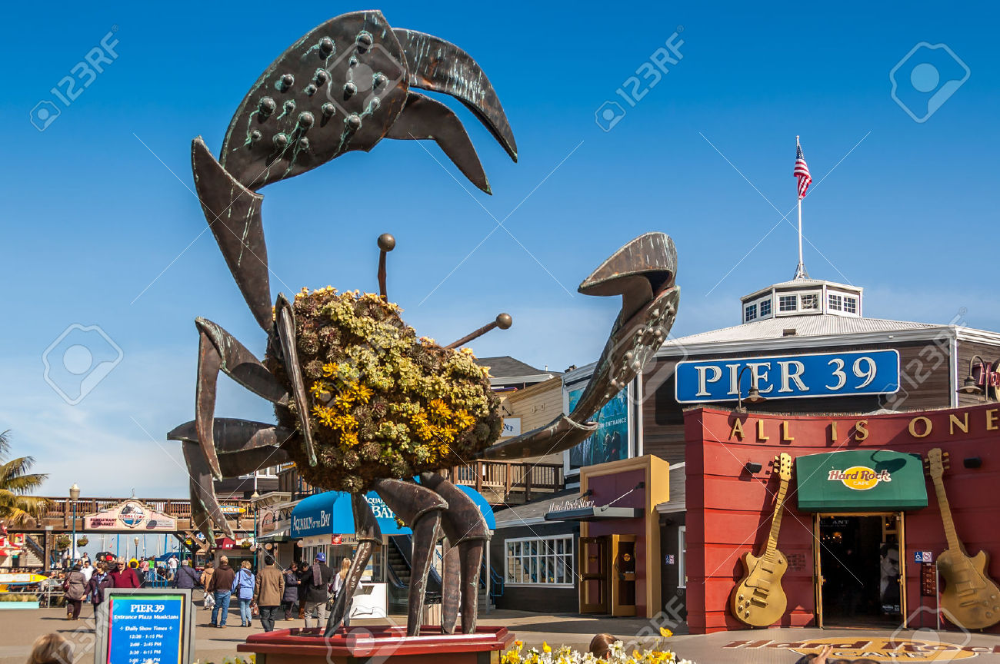

Things to See back to top
Exploratorium
The Exploratorium is a public learning laboratory in San Francisco exploring the world through science, art, and human perception. Its mission is to create inquiry-based experiences that transform learning worldwide.
Golden Gate Bridge

The Golden Gate Bridge is a suspension bridge spanning the Golden Gate strait, the one-mile-wide, one-point-seven-mile-long channel between San Francisco Bay and the Pacific Ocean.
Golden Gate Park

Golden Gate Park, located in San Francisco, California, United States, is a large urban park consisting of 1,017 acres of public grounds
Palace of Fine Arts
The Palace of Fine Arts in the Marina District of San Francisco, California, is a monumental structure originally constructed for the 1915 Panama-Pacific Exposition in order to exhibit works of art presented there.
Pier39
Bustling bayside pier featuring scenic views, sea-lion sightings, eateries, shops & entertainment.